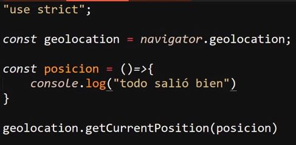
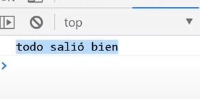
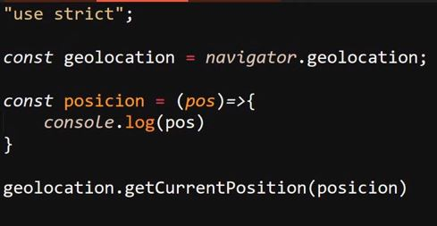
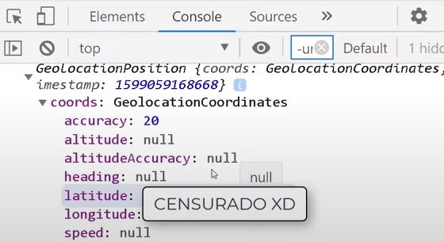
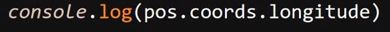
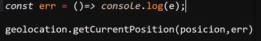
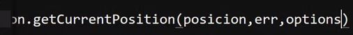
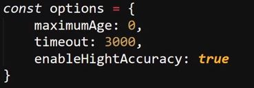
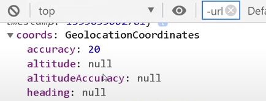

Geolocalization
Se trata de la "api" especializada en trabajar con la ubicacióndel dispositivo, para esto se accede al objeto "navigator" el cual es un objeto qie hace referencia al navegador y se desenglosara más adelenate, por ahora lo relevante consiste en la aplicación de esta "api".
Para hacer uso de esta en el objeto "navigator" se utiliza el objeto ".geolocation", este posee varios metodos creados espesificamente para gestiona los datos de la ubicación del dispositivo, estos metodos son:
-
GetCurrentPosition(): Este metodo requiere que se le ingrese al menos un parametro para funcionar, pero en si este puede recibir hasta tres de estos.
Una caracteristica curiosa de los parametros de este objeto es que estos requieren estar igualados a funciones para funcionar, esto debido a que desde estas funciones es donde se indica que acciones tomar al objeto, para esto los parametros se igualan a funciones flecha
Ejemplo

Resultado

-
El primero de estos parametros hace referencia a la ubicación del dispositivo, debido a que este parametro de por si no retorna ningun valor se iguala este parametro a una función, y si a su ves se le envia el parametro "pos" a esta función interna se puede obtener la ubicación actual del dispositivo:

Resultado

Por lo tanto es densde la función interna del parametro del objeto que se puede acceder a la ubicación, de hecho desde allì tambien se puede obtener la latitud y la longitud:
Latitud
Longitud

-
EL segundo parametro que recibe "GetCurrentPosition()" se refiere al error, esto debido a que existe la posibilidad de que ocurra algun error al tratar de obtener la ubicación del dispositivo, por lo tanto este parametro de igual forma se debe igualar a una función flecha la cual se encargara del manejo de los errores
Ejemplo

-
EL tercer y ultimo parametro se trata de "options" el cual se encarga de trabajar con las opciones, en este caso este parametro consistenen un objeto que almacena todas las opciones que se deseen incluir en la ubicación, entre estas opciones esta:
-
MaximunAge: Espesifica el numero de registro de la ubicación a obtener, en esta opción el valor "0" inica la ultima ubicación del disposotivo, es decir obtener la ubicación actual
-
Timeout: Esta opción define cuantos seguntos deben demorar en devolverse los datos, el valor de esta opción debe expresarse en milisegundos
-
EnableHightAccuracy: esta opción indica el si se deben utilizar todos los recursos de ubicación disponibles para obtener la mayor presición sobre la ubicación, esto se realiza aplicando el valor "true" en esta propiedad
Ejemplo


Resultado

-
WatchPosition(): Este metodo se encarga de hacer seguimiento de todos los cambios de ubicación, por lo tanto se encarga de seguir el dispositivo mientras este se enceutra en movimiento, tambien se podria decir que este metodo permite obtener la ubicación en tiempo real.
-
ClearWatch(): Este metodo permite borrar el historial de "watchPosition()"